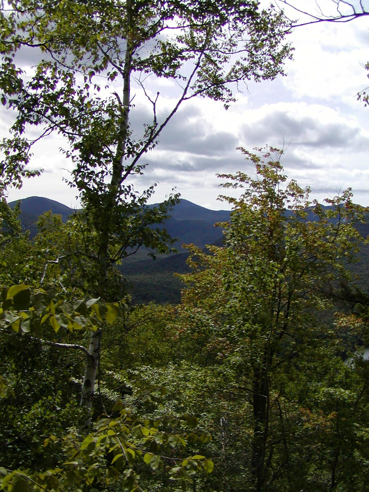
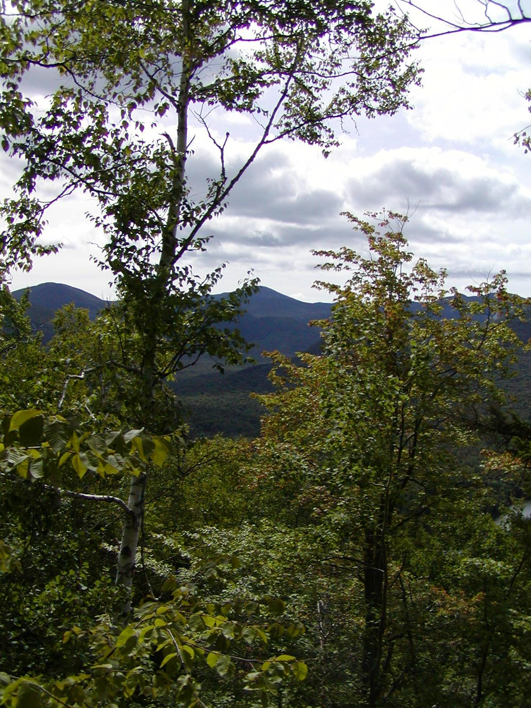

!שלם עלם
אני מיכאל Bowe. אני בוגר תיכון Minuteman בשנת 2012 עם תעודה בתכנות ועיצוב אתרים. אני התחרה בתחרות עיצוב אתרי SkillsUSA והניח בדף 10 ארצי בשינה 2012. לחץ כאן לדוגמא של העבודה שלי! אני לומד כיום UMass לואל למדעי מחשב.
אני מיכאל Bowe. אני בוגר תיכון Minuteman בשנת 2012 עם תעודה בתכנות ועיצוב אתרים. אני התחרה בתחרות עיצוב אתרי SkillsUSA והניח בדף 10 ארצי בשינה 2012. לחץ כאן לדוגמא של העבודה שלי! אני לומד כיום UMass לואל למדעי מחשב.
